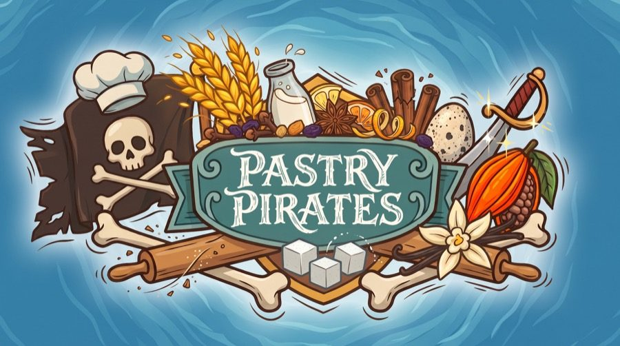
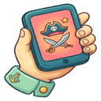
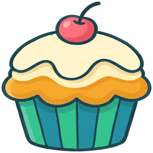
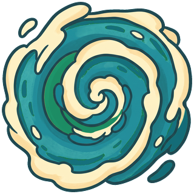
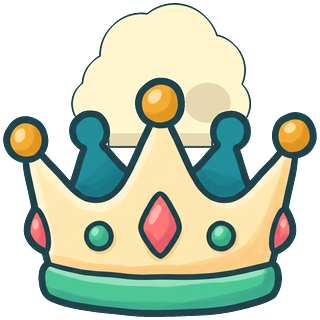

ONLINE_SETUP.md. Solo play works right now!
Pass the deviceCollect every ingredient on your recipe map, then sail home and dock at the Isle of Tortuga. First baker home wins!
Each captain gets a recipe map (5 ingredients), 3 gold coins, and a ship docked at the Isle of Tortuga. Each island holds only a few crates — when they're gone, they're gone.
🌬️ Wind. Each round the wind picks a direction and holds it. It doesn't move you — it sets your sailing budget: cheap with the wind, dear against it, in between across it.
⛵ Sail. Pay 1🌕 to move using a 9-point budget: 2 pts/square with the wind (up to 4 squares), 3 pts/square across it (up to 3), 4 pts/square against it (up to 2) — mix directions freely as long as you can afford the total. An island upwind of you cuts your budget to 7. Sail past other ships, but don't end on one. No coins? You can't sail this turn — better go fishing!
⚓ Act — choose one:
Dock — tie up at an island's dock (one ship at a time!) and flip: heads take a crate; tails take 3🌕 — or pay 3🌕 to buy the crate anyway. Stay as long as you like and keep flipping. Ship's hold: you may take crates that aren't on your recipe — they make excellent trade bait...
Attack — fight an adjacent ship! Pay 2🌕 powder, then flip head-to-head: heads beats tails (1 point). Both heads? The captain firing downwind lands the shot — that's the wind advantage; a crosswind clash cancels. On a double-miss (both tails) the defender may pay 1🌕 to flee to safety instead of fighting on. First to 2 points wins; loser hands over a crate (winner picks) or 5🌕 — loser's choice. Can't pay in full? Winner takes everything. Nobody changes squares — win or lose, every ship holds its position. Spectators can call the winner for a free dubloon at the Lookout's Call — or back their call with coin for double or nothing.
Parley — hail any captain, anywhere, and make a deal: crates, coins, or both together. When a trade is struck, both captains collect +1🌕 from the bank.
Fish — flip: heads nets 2🌕, tails... just a candycrab (1🌕).
Start your bakery! — at the Isle of Tortuga with your whole recipe? Declare victory!


The trade windsThe sea around the rim of the world flows in a mighty clockwise current, in arcs of varying length each game. Sail (or get blown) into it and you're instantly swept to the far corner of that stretch — a daring shortcut for captains in a hurry!
Roughly 3 in 20 rounds brews a storm — the only time the wind moves you without your say-so: it forcibly pushes everyone 2 squares, then spins and pushes 2 more. Moored ships are safe — if you docked last turn, sit at a berth, or are at the Isle of Tortuga, the storm can't push you into land. Otherwise, blown at an island you must pay 1🌕 to dodge or flip: heads drop anchor safely, tails run aground — lose half your coins, or a crate if you're broke, or the whole turn to repairs if your hold's empty too! The wind never blows you onto a full dock.
Take too long on your turn and you'll lose a random ingredient from your hold (or 5🌕 if you're out of ingredients) and miss the turn.

WinningWhen the first baker docks home, everyone else gets one last turn. If more than one makes it: BAKEOFF! Flip head-to-head, first to 3 points takes the crown.
May your flips be heads and your rivals be broke.
This game was made by Wyatt Roy, a designer and overly enthusiastic noodle. It was inspired by two highschoolers, Luca and Amelia, who were taught by Nick Lesko how to design their own board game. When I came to class and saw theirs, an amazing bridge-building game called Seafarers, something in me clicked. Or broke. Or both. For the next 8 days straight (and counting) I did nothing except eat pastry, talk like a pirate, and build Pastry Pirates.
The game owes an immense amount to Luis Zanforlin, who spent his entire last day in Boston imagining mechanics for it in his head, my father Robin and mother Cathy, two of its first multiplayer testers, and Xavaar, who came up with the idea for how the wind should affect your movements based on real sailing — as well as ways to make battles genuinely strategic, and playtesting it with an obsession that mirrored my own. And lastly, to my sweet partner Juju, who has tolerated me turning every conversation towards Pastry Pirates with the acceptance of a Buddhist monk.